Tubería y accesorios PVC
Tubería y accesorios PVC en Distribuidora C y M: 341 productos con precio con IVA incluido. Pida en línea y retire en el local o reciba en su casa.
Ver y comprar en la tienda en línea341 productos
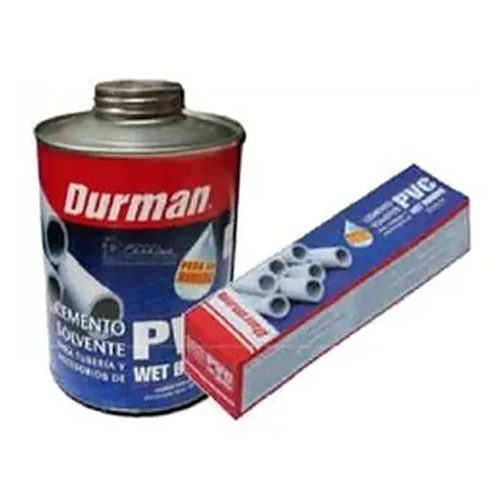
Pegamento para PVC Wet Bonding 25 g₡773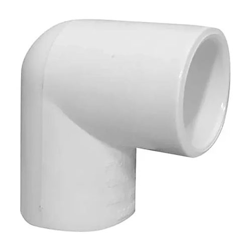
Codo PVC liso 1/2"₡98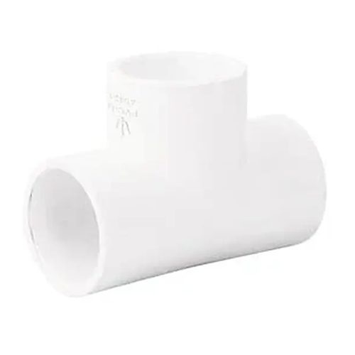
Tee PVC lisa 1/2"₡147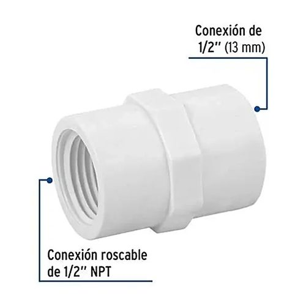
Adaptador PVC hembra 1/2"₡87 Pegamento para PVC Wet Bonding 1/32₡2 574
Pegamento para PVC Wet Bonding 1/32₡2 574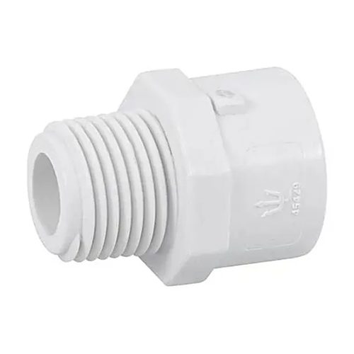
Adaptador PVC macho 1/2"₡78,65 Codo PVC sanitario 2" x 90₡460
Codo PVC sanitario 2" x 90₡460- Tapón PVC hembra liso 1/2"₡55
 Pegamento para PVC azul Amanco tubo 25 g₡875,15
Pegamento para PVC azul Amanco tubo 25 g₡875,15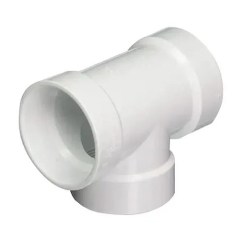
Tee PVC sanitaria 2"₡678,01 Codo PVC sanitario 3" x 90₡858
Codo PVC sanitario 3" x 90₡858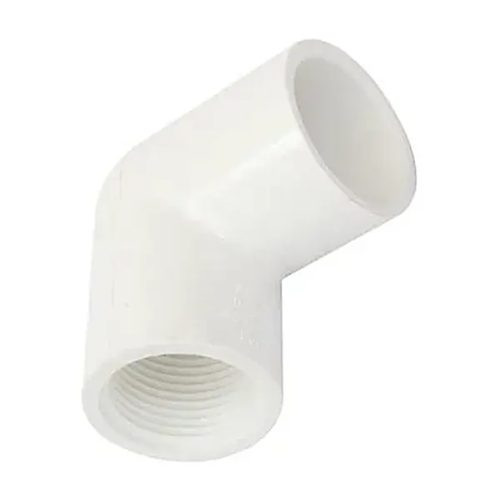
Codo PVC con rosca 1/2"₡185,14 Codo PVC sanitario 4" x 90₡1 699
Codo PVC sanitario 4" x 90₡1 699 Pegamento para PVC azul Amanco 1/32₡2 939,47
Pegamento para PVC azul Amanco 1/32₡2 939,47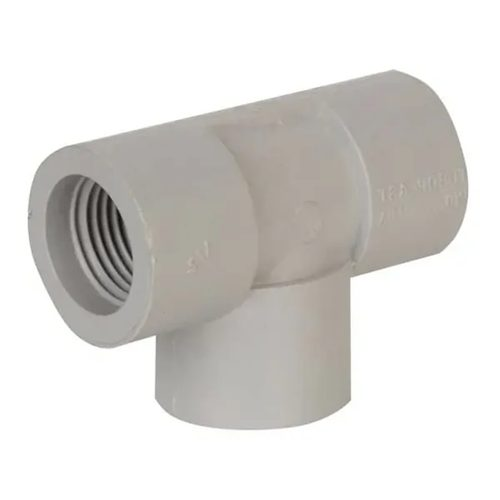
Tee PVC 1/2" con rosca₡183 Codo PVC sanitario 1 1/2" x 90₡317
Codo PVC sanitario 1 1/2" x 90₡317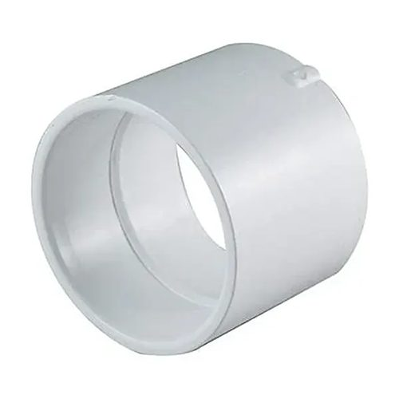
Unión PVC sanitario 2"₡297 Codo PVC sanitario 2" x 45₡455
Codo PVC sanitario 2" x 45₡455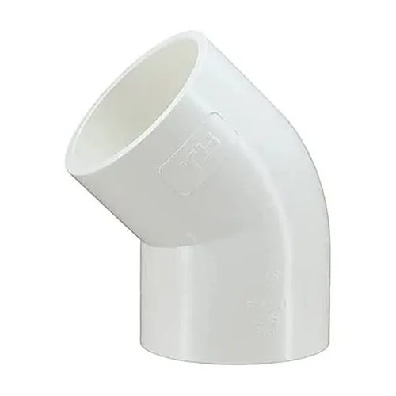
Codo PVC liso 1/2" x 45₡95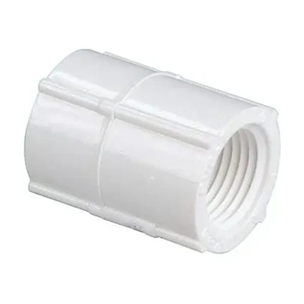
Unión PVC doble rosca 1/2"₡192,51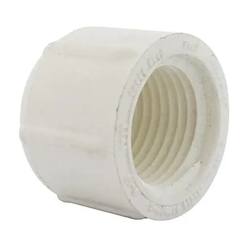
Tapón PVC hembra con rosca 1/2"₡110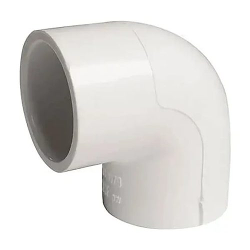
Codo PVC liso 1"₡283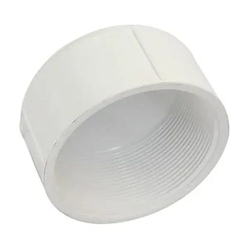
Tapón PVC hembra 2" sanitario₡364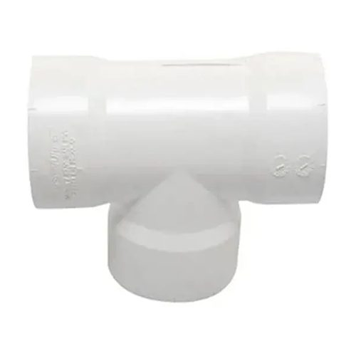
Tee PVC sanitaria 3"₡1 525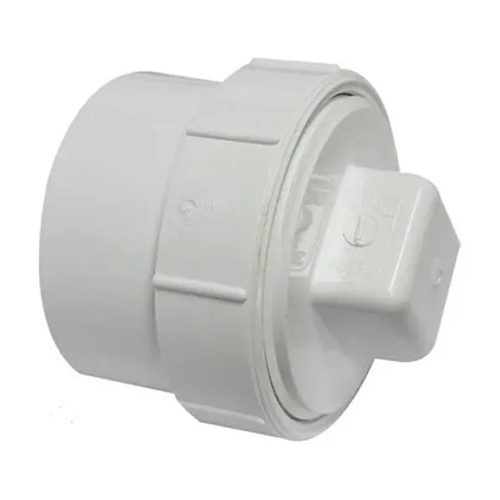
Tapón PVC hembra 4" sanitario₡580- Unión PVC sanitario 1 1/2"₡207,95
 Tapón PVC hembra 3" sanitario₡297,47
Tapón PVC hembra 3" sanitario₡297,47 Pegamento para PVC Wet Bonding 50 g₡1 493,99
Pegamento para PVC Wet Bonding 50 g₡1 493,99 Codo PVC sanitario 4" x 45₡1 708,26
Codo PVC sanitario 4" x 45₡1 708,26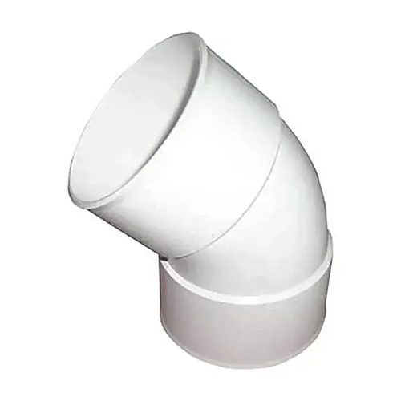
Codo PVC sanitario 3" x 45₡936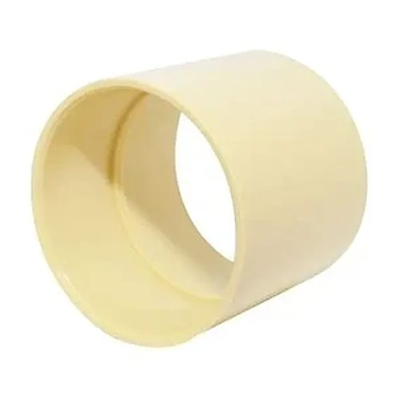
Unión PVC sanitario 3"₡812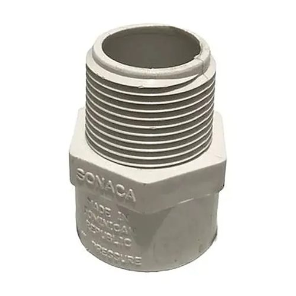
Adaptador PVC macho 1"₡181,99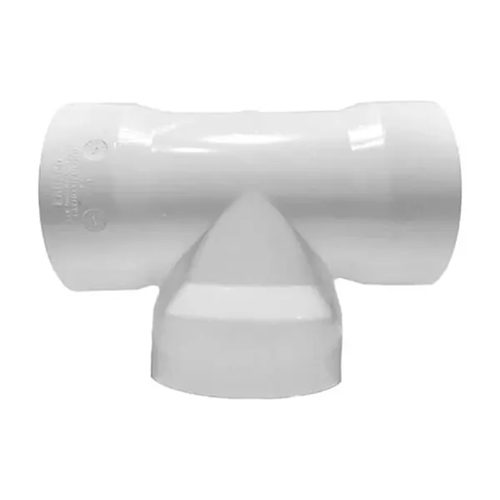
Tee PVC sanitaria 4"₡3 342,29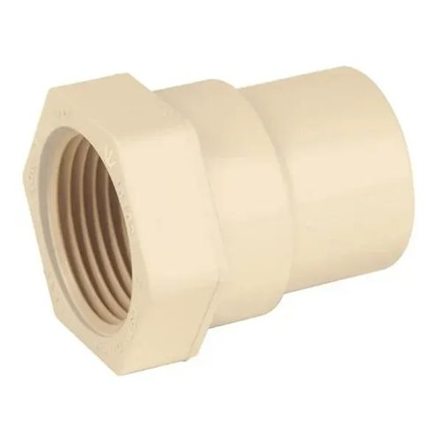
Adaptador PVC hembra 1"₡172,81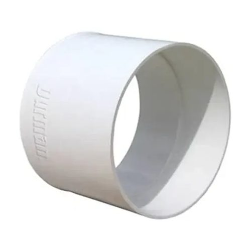
Unión PVC sanitario 4"₡1 304,30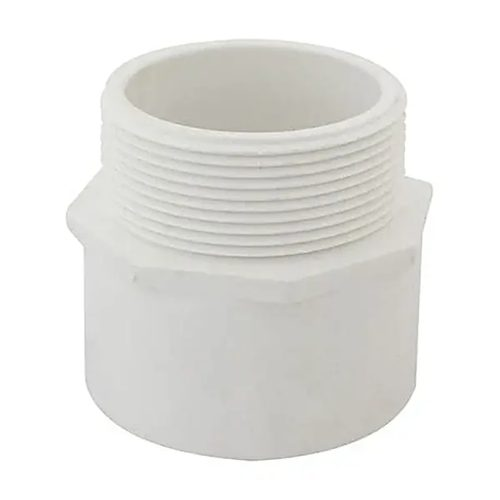
Adaptador PVC macho 2"₡485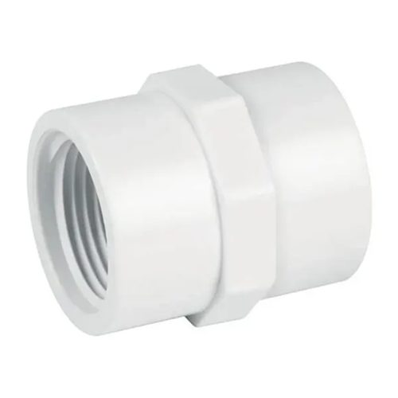
Adaptador PVC hembra 3/4"₡107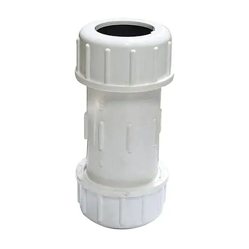
Unión de transición PVC 1/2" económica₡587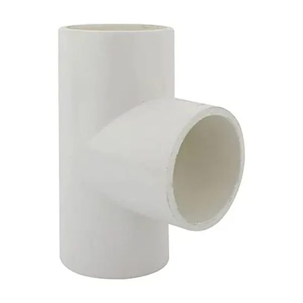
Tee PVC lisa 1"₡366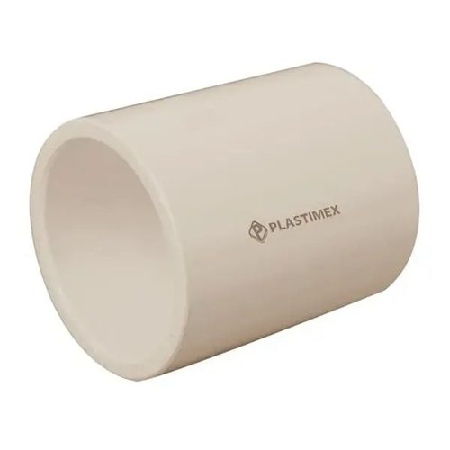
Unión PVC lisa 3/4"₡100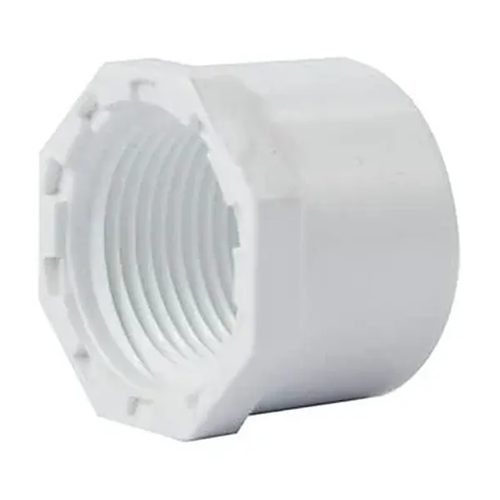
Tapón PVC hembra sanitario 1 1/2"₡289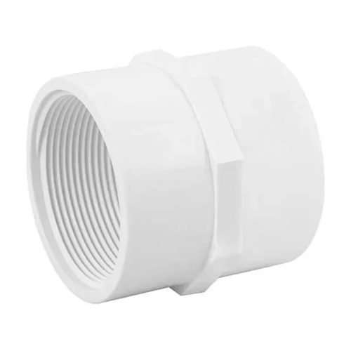
Adaptador PVC hembra 2"₡549 Yee PVC sanitaria 2"₡915,32
Yee PVC sanitaria 2"₡915,32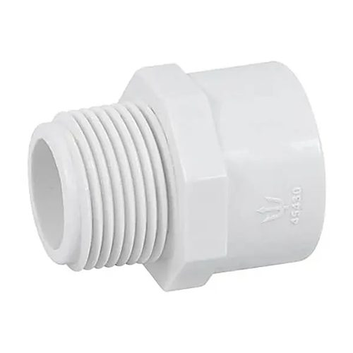
Adaptador PVC macho 3/4"₡92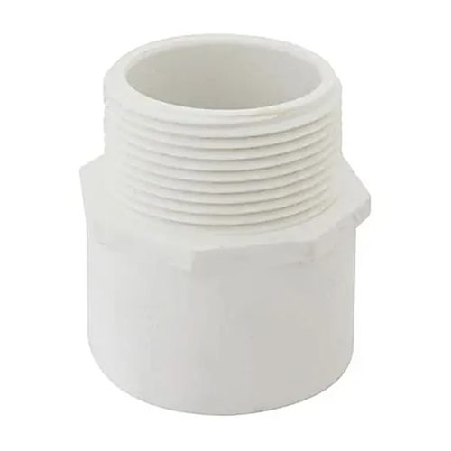
Adaptador PVC macho 1 1/2"₡338,92 Codo PVC sanitario 1 1/2" x 45₡293
Codo PVC sanitario 1 1/2" x 45₡293 Yee PVC sanitaria 3"₡2 175,29
Yee PVC sanitaria 3"₡2 175,29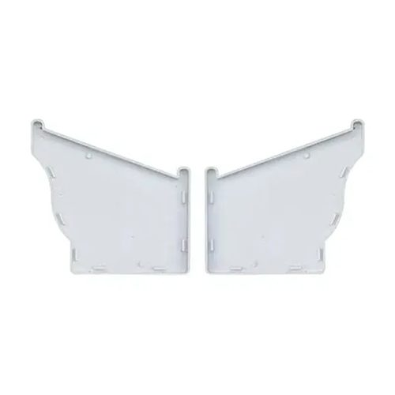
Amanco tapa para canoa PVC UV colonial blanco₡2 212,32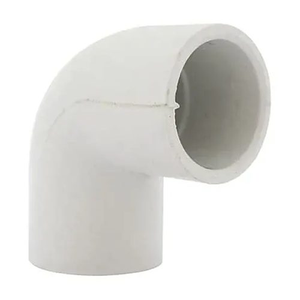
Codo PVC liso 3/4"₡158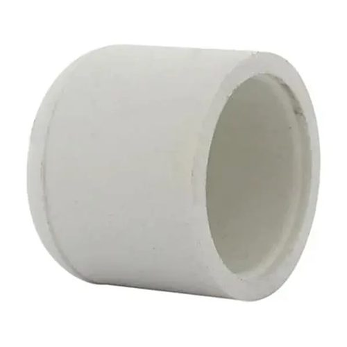
Tapón PVC hembra liso 1"₡139,13 Pegamento para PVC azul Amanco 1/16₡3 992,25
Pegamento para PVC azul Amanco 1/16₡3 992,25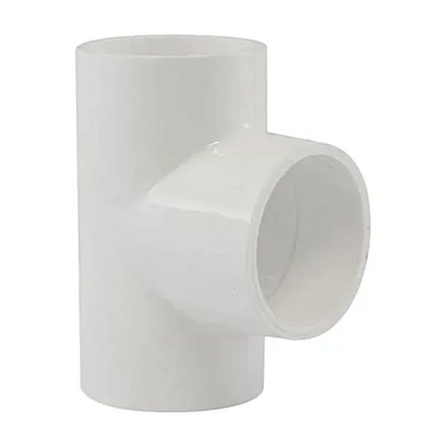
Tee PVC lisa 3/4"₡201,12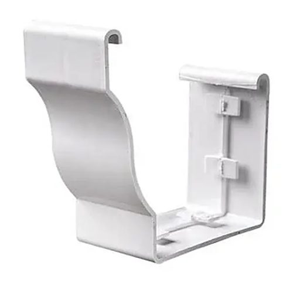
Amanco unión canoa colonial₡1 383,93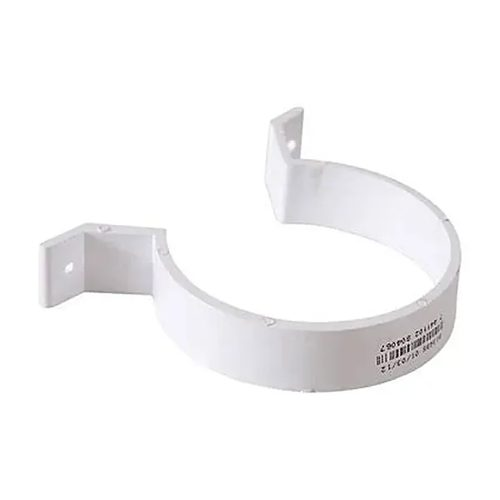
Gaza para bajante 2" Amanco₡470,21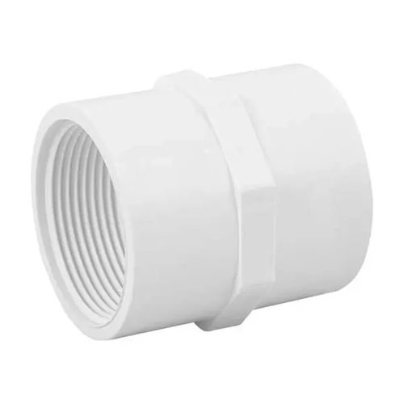
Adaptador PVC hembra 1 1/2"₡373,57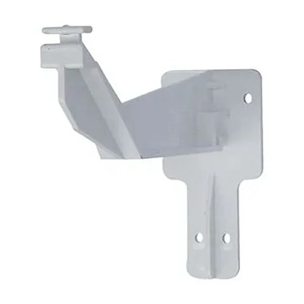
Amanco soporte interno para canoa PVC UV colonial blanco₡1 098 Pegamento para PVC azul Amanco tubo 50 g₡1 252
Pegamento para PVC azul Amanco tubo 50 g₡1 252 Yee PVC sanitaria 4"₡3 096,73
Yee PVC sanitaria 4"₡3 096,73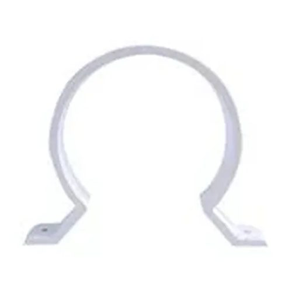
Gaza para bajante 3" Amanco₡517,74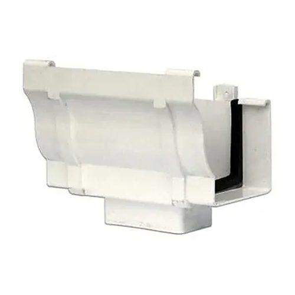
Boquilla para canoa colonial PVC UV 50 mm 2" blanco Amanco₡3 375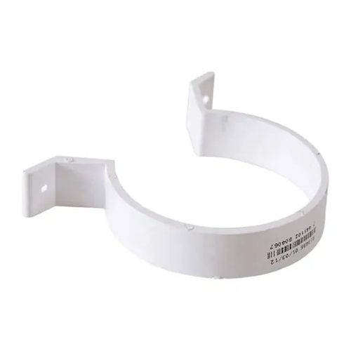
Gaza para bajante 4" Amanco₡599,64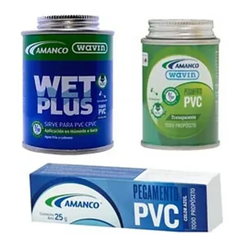
Pegamento para PVC azul Amanco 1/8 (470 ml)₡5 976,48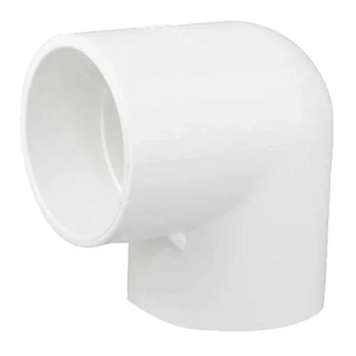
Codo PVC liso 2" x 90₡1 875,98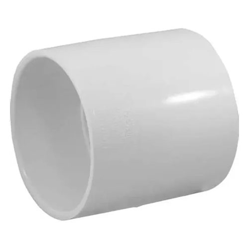
Unión PVC lisa 2"₡458,68- Unión de transición PVC 1" económica₡1 445,16
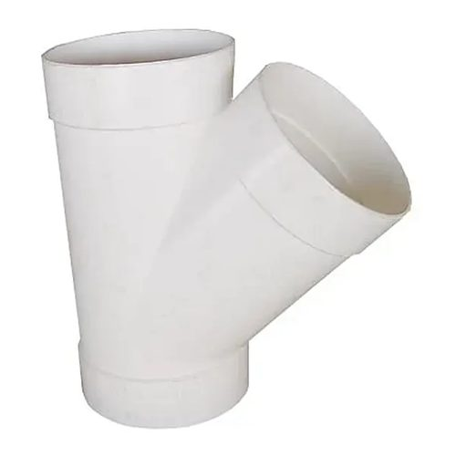
Yee PVC sanitaria 1 1/2"₡510,73 Tapón PVC hembra liso 3/4"₡86,54
Tapón PVC hembra liso 3/4"₡86,54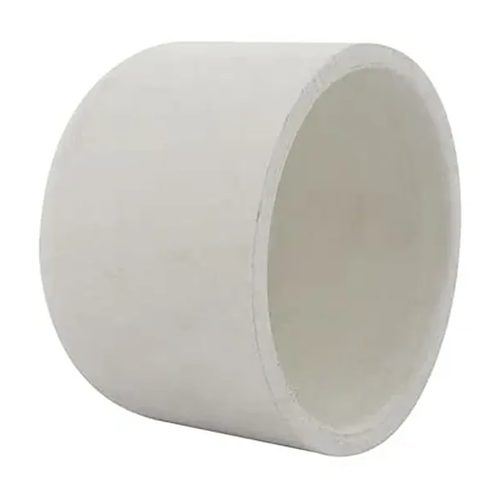
Tapón PVC hembra liso 1 1/2"₡456,37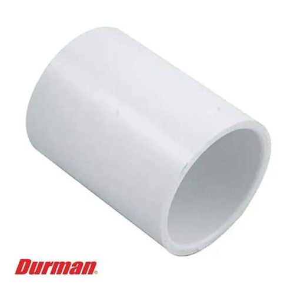
Unión PVC lisa tope 1 1/2"₡1 767,29- Unión de transición PVC 1/2" (12 mm) blanca Amanco₡2 468,26
 Pegamento para PVC azul Amanco 1/4₡8 178,38
Pegamento para PVC azul Amanco 1/4₡8 178,38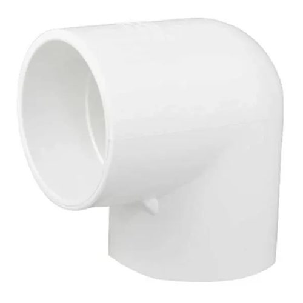
Codo PVC liso 1 1/2"₡620,27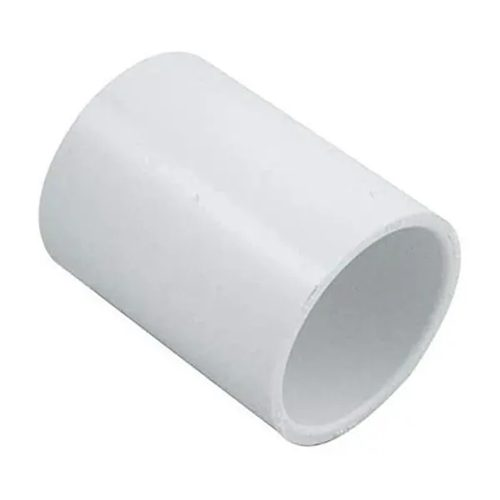
Unión PVC lisa 1 1/2"₡441,32- Tee PVC lisa 2"₡1 204,89
- Tapón PVC hembra liso 2"₡560,84
- Tapón PVC hembra con rosca 2"₡2 234,16
- Amanco canoa lisa PVC 6 m₡26 708,24
- Pegamento para PVC Durman Esquivel tubito 25 g₡616,85
- Codo PVC liso 2" x 45₡1 041,43
- Tee PVC 1" con rosca₡593,25
- Tee PVC lisa 1 1/2"₡937,49
- Tapón PVC hembra con rosca 3/4"₡578,32
 Tapón PVC hembra con rosca 1"₡820,11
Tapón PVC hembra con rosca 1"₡820,11- Unión de transición PVC 12 mm a 1/2"₡2 909,23
- Unión de transición PVC 25 mm a 1" blanca₡6 832,52
 Unión de transición PVC 38 mm a 1 1/2" blanca₡10 853,38
Unión de transición PVC 38 mm a 1 1/2" blanca₡10 853,38- Unión de transición PVC 50 mm a 2"₡14 665,14
- Tee PVC sanitaria 1 1/2"₡921,06
- Tapón PVC hembra 3" sanitario 75 mm₡875
- Tubos PVC sanitario Durman 3"₡9 966
- Tubos PVC sanitario Durman 2"₡5 407,05
- Tubos PVC sanitario Durman 1 1/2"₡5 054,49
 Pegamento para PVC Wet Bonding 1/16₡3 023,39
Pegamento para PVC Wet Bonding 1/16₡3 023,39 Pegamento para PVC Durman Esquivel tubito 50 g₡960,42
Pegamento para PVC Durman Esquivel tubito 50 g₡960,42 Tapón PVC hembra con rosca 3" SCH40 75 mm₡3 125,30
Tapón PVC hembra con rosca 3" SCH40 75 mm₡3 125,30- Unión PVC lisa 1/2"₡77
- Tubo PVC 1/2" SCH-40 (alta) Furia₡2 867
- Codo PVC liso 1/2 SCH40 Durman₡165,28
- Unión PVC lisa 1/2" SCH40 Durman₡136
- Tee PVC lisa 1/2" SCH40 Durman₡170,63
- Adaptador PVC macho 1/2" SCH40 Durman₡133,23
- Poliducto unión para manguera compresión 1/2"₡583,58
- Adaptador PVC hembra 1/2" SCH40 Durman₡174
- Tubo PVC 2" sanitario Amanco₡4 631,39
- Unión PVC lisa 1"₡174,55
- Manguera poliducto 1/2" 90 m azul₡15 795
- Tubo PVC 4" sanitario blanco SDR50 Furia₡10 085
- Tubo PVC 3" sanitario blanco SDR50 Furia₡8 976
- Poliducto llave paso para manguera 1/2" compresión₡573,41
- Poliducto tee para manguera compresión 1/2"₡955,08
- Tubo PVC 1/2" para delgada Koplas₡1 753
- Tapón PVC hembra liso 1/2" SCH40 Durman₡106,35
- Tubo PVC 1 1/2" sanitario blanco SDR41 Koplast /Furia₡4 137,59
- Tubo PVC 2" sanitario blanco SDR50 Furia₡4 677
- Reducción PVC 1" x 1/2"₡164,39
- Tapón PVC macho 1/2" con rosca₡124
- Tubo PVC 3" saniatario Amanco₡8 922,24
- Poliducto hembra para manguera con rosca compresión 1/2"₡569,11
- Reducción PVC 3/4" x 1/2"₡102,51
- Reducción PVC 2" x 1 1/2"₡459,76
- Tubo PVC sanitario Amanco 4"₡10 572,63
- Unión PVC lisa tope 1/2"₡400,09
- Poliducto macho con rosca compresión 1/2"₡456,51
- Codo PVC con rosca 1/2 Durman₡231,67
- Codo PVC liso 1/2" x 45 SCH40 Durman₡273,95
- Poliducto unión para manguera compresión 3/4"₡682,47
- Reducción PVC 2" x 1/2"₡611
- Reducción PVC 4" x 3"₡1 723
- Reducción PVC 1" x 3/4"₡184,59
- Reducción PVC 2" x 1"₡450
- Poliducto unión para manguera compresión 1"₡852,39
- Reducción PVC 3" x 2"₡884,79
- Tubo PVC 1 SDR26 Furia₡3 279,88
- Poliducto unión para manguera 1/2₡117
- Manguera poliducto 1" 90 m azul₡44 046
- Manguera poliducto 3/4" 90 m azul₡27 648
- Reducción PVC 1 1/2" x 1/2"₡411
- Tubo PVC 1" SDR17 Koplast - Furia₡3 668,34
- Amanco pegamento PVC trans 25 g₡886,22
- Poliducto llave paso para manguera 3/4" compresión₡1 284,41
- Poliducto reducción para manguera compresión 3/4 x 1/2₡935,91
- Reducción PVC 1 1/2" x 1"₡408,83
- Reducción PVC 4" x 2"₡1 580
- Tubo PVC 3/4 SDR17 Koplast₡2 693
- Poliducto codo para manguera 1/2" compresión₡661,12
- Poliducto codo para manguera 3/4" compresión₡607,50
- Poliducto hembra para manguera con rosca compresión 1"₡828,47
- Poliducto llave paso para manguera 1/2 económica₡419,96
- Tapón PVC hembra con rosca 1/2" SCH40 Durman₡156,31
- Poliducto hembra para manguera con rosca compresión 3/4"₡592,06
- Poliducto reducción para manguera compresión 1 x 3/4₡926,46
- Poliducto tee para manguera compresión 3/4"₡1 184,11
- Trabador 271 azul 6 ml Permatex₡1 716,42
- Tubo PVC 1 1/2" SDR17 Koplast₡9 240
- Poliducto llave paso para manguera 1" compresión₡1 609,70
- Poliducto macho para manguera con rosca 1/2"₡123,94
- Poliducto macho para manguera con rosca compresión 1"₡652,44
- Poliducto macho para manguera con rosca compresión 3/4"₡455,21
- Poliducto unión para manguera 3/4₡188,98
- Adap hembra compresión PVC blanco (1/2) anillo metálico para tubo polietileno₡2 593,35
- Adap macho PVC compresión blanco (1/2) anillo metálico para tubo polietileno₡2 837,43
- Amanco canoa PVC colonial 6 m₡27 369
- Codo PVC sanitario 2" x 90 Durman₡1 260,84
- Manguera poliducto agric 1 1/4" virgen 45.75 m₡30 701,93
- Poliducto codo para manguera 1/2"₡335,01
- Poliducto tee para manguera compresión 1"₡1 431
- Tee poliducto compresión 1 1/4"₡1 345,99
- Tee PVC lisa cruz SCH40 1"=25 mm Amanco₡3 277,69
- Tee PVC lisa en cruz 1/2 Amanco₡3 284,67
- Unión de compresión PVC blanco (1/2) anillo metálico para polietileno₡2 898,45
- Abrazadera SCH40 lisa 2 x 1/2 Amanco₡8 491
- Adaptador PVC de limpieza 3" con tapón₡1 658,98
- Adaptador PVC de limpieza 4" con tapón₡2 122,99
- Adaptador PVC hembra 2" Durman₡1 414,39
- Adaptador PVC macho 2" Durman₡1 348,31
- Amanco tapas para canoa lisa par (C 52 U)₡2 048,37
- Codo poliducto compresión 1 1/4"₡1 317,14
- Codo PVC liso 1/2" SCH40 12 mm Amanco₡131,95
- Codo PVC sanitario 4" x 45° Durman₡3 499,94
- Poliducto adaptador hembra 1 1/2" compresión₡4 212,52
- Poliducto adaptador macho 2 " compresión₡2 532,27
- Poliducto codo para manguera 1" compresión₡1 094,77
- Poliducto llave paso para manguera compresión 1 1/2₡3 494,16
- Poliducto manguera ecotubo 1/2" x 90 m₡14 601,45
- Poliducto reducción para manguera compresión 2 x 1 1/2₡1 441,52
- Poliducto tee para manguera 1/2"₡192,44
- Poliducto tee para manguera 3/4"₡428,37
- Poliducto unión para manguera 1₡239,81
- Poliducto unión para manguera compresión 1 1/2"₡2 349,99
- Reducción roscada 1" x 1/2"₡518,33
- Tapón hule cuadrado 1" nacional₡134,37
- Tapón hule cuadrado 4" nacional₡1 808,81
- Tapón PVC hembra con rosca 1 1/2" SCH40 38 mm Amanco₡1 734,23
- Tee de polietileno 1/2" (12 mm) Cepex₡10 702,23
- Tee PVC 1/2" con rosca SCH40 12 mm Amanco₡261,03
- Tee PVC sanitaria 2" Durman₡1 493,32
- Tee PVC sanitaria 4" Durman₡4 237,50
- Unión poliducto compresión agrícola 1 1/4"₡890,64
- Unión PVC lisa 2" Durman₡1 213,98
- Unión PVC lisa tope 1" Durman₡3 059,71
- Tee PVC sanitaria 1 1/2₡421,88
- Union PVC lisa tope 1/2 Amanco₡3 257,49
- Tubo PVC 3/4 SCH40 Durman₡5 890,18
- Unión PVC de tope lisa 1"₡874,62
- Abrazadera SCH40 lisa 4 x 1/2 Amanco₡16 981,29
- Abrazadera SCH40 lisa 3 x 1/2 Amanco₡16 428
- Adaptador para sifón macho 1 1/2 a 1 1/2 PVC 2669₡515,51
- Adaptador PVC hembra 3" Durman₡4 565,06
- Adaptador PVC macho 1" Durman₡445,87
- Adaptador PVC macho 1/2" SCH40 12 mm Amanco₡200
- Adaptador PVC macho 3" SCH40 75 mm Amanco₡3 791,15
- Amanco agua caliente codo liso CPVC 1/2 x 90 12 mm₡795,24
- Amanco agua caliente tapón hembra liso 1/2₡468,70
- Amanco agua caliente te PVC lisa 1/2 12 mm₡459,06
- Amanco agua caliente tubo CPVC 1/2 12 mm₡19 505,39
- Canoa PVC colonial 4 m Amanco₡17 029,68
- Amanco codo liso PVC 45° SCH40 18 mm=3/4" (B 25 U )₡526,57
- Amanco codo rectangular para canoa₡4 772,36
- Esquinero interno para canoa colonial Amanco₡5 587,29
- Amanco pegamento PVC trans 50 g₡1 028,82
- Amanco pegamento PVC transparente 1/32₡2 385,64
- Amanco tapón hembra liso PVC SCH40 1 1/4₡572,73
- Amanco tapón macho PVC 3" SCH40₡6 850,01
- Unión de bajante PVC con dilatación clásica 3" rectangular blanca₡3 862
- Codo 90° de compresión para polietileno 1/2" Cepex₡2 089,93
- Codo PVC con rosca 1" SCH40 Amanco₡748,61
- Codo PVC 1/2" x 90° con inserto metálico Durman₡4 877
- Codo PVC liso 1 1/2" 45° SCH40 38 mm Amanco₡1 860,09
- Codo PVC liso 1 1/2" SCH40 38 mm Amanco₡1 585,11
- Codo PVC liso 1" SCH40 25 mm Amanco₡791
- Codo PVC liso 1" x 45 SCH40 25 mm Amanco₡790,57
- Codo PVC liso 2" SCH40 50 mm amamco blanco cam/cem₡2 211,97
- Codo PVC liso 2" x 45° SCH40 50 mm=2" Amanco₡1 931,79
- Codo PVC liso 3" x 45 SCH40 75 mm Amanco₡12 980,20
- Codo PVC liso 3/4 x 90 Durman₡264,54
- Codo PVC liso 4" SCH40 100 mm Amanco₡13 955,50
- Codo PVC liso 4" x 45° SCH40 Amanco₡15 712,65
- Codo PVC sanitario 2" x 45° Durman₡865,89
- Codo PVC sanitario 4" x 90 Durman₡3 005,82
- Durman bajante canoa clasic 50 mm(2") PVC bla₡1 826,79
- Esquinero para canoa clásica Durman₡3 643,50
- Durman soporte PVC oculto para canoa blanco₡1 299,99
- Durman unión para canoa clásica₡788,79
- Llave paso PVC 1/2" con rosca₡989,99
- Manguera poliducto ecotubo 1 1/2" 45 m₡39 072,33
- Manguera poliducto ecotubo 3/4X 90 m₡22 814,45
- Manguera de poliducto Ecotubo agrícola 2" 45 m₡52 584,74
- Pegamento Pattex No Más Clavos 113 g₡2 845,62
- Pegamento PVC 100 g para canoa₡1 670,80
- Poliducto codo para manguera 3/4"₡483,30
- Poliducto llave paso para manguera 3/4" económica₡562,55
- Poliducto manguera 1/2 barriplast₡24 585,38
- Poliducto manguera ecotubo 1" x 90 m₡36 740
- Poliducto manguera virgen 1 1/2 " 45 m₡49 302,63
- Poliducto manguera virgen 1" 91.5 m₡50 483,37
- Poliducto manguera virgen 1/2" x 91.5 m₡18 328,17
- Poliducto te para manguera compresión 1 1/2"₡4 606,25
- Poliducto unión para manguera 1 1/2₡1 507
- Poliducto unión para manguera 2"₡1 710,69
- Poliducto unión para manguera compresión 2"₡4 279,21
- Reducción CPVC Durman 3/4 a 1/2₡377,97
- Reducción PVC Amanco 1" x 1/2" SCH40₡479,35
- Reducción PVC Amanco 2" x 1 1/2" SCH40₡1 610,59
- Reducción PVC Amanco 2" x 1" SCH40₡2 162,59
- Reducción PVC Amanco 4" x 2"₡3 923,90
- Reducción PVC Amanco SCH40 1 1/2" x 1"₡1 059,94
- Reducción PVC Amanco SCH40 1 1/4" x 1"₡686,07
- Reducción PVC Amanco SCH40 1.1/2" x 1/2"₡838,26
- Reducción PVC Amanco SCH40 2" x 1 1/2"₡1 523,47
- Reducción PVC Amanco SCH40 2" x 3/4₡1 629,65
- Reducción PVC Amanco SCH40 2.1/2" x 2=62X50MM ( C 80)₡4 502,48
- Reducción PVC Amanco SCH40 3/4" x 1/2"₡181,76
- Reducción PVC Amanco SCH40 4" x 2" 100 mm x 50 mm₡6 542,63
- Reducción PVC Amanco SCH40 4" x 3"₡7 411,46
- Reducción PVC Amanco SCH40 6" x 4"₡17 364,71
- Reducción PVC Amanco SCH40 6 x 4 150 mm x 100 mm₡16 248,49
- Reducción PVC Amanco SCH40 8" x 6" 200 mm x 150 mm₡54 081,18
- Tapas PVC Durman para canoa clásica blanca x par₡1 842,83
- Tapón hembra liso PVC SCH40 50 mm=2" Amanco₡1 247,94
- Tapón hule cuadrado 1 1/2 nacional₡316,53
- Tapón hule cuadrado 1/2" nacional₡106,78
- Tapón hule cuadrado 2" nacional₡678,28
- Tapón hule cuadrado 3" nacional₡1 522,97
- Tapón hule cuadrado 3/4 nacional₡117,57
- Tapón hule rectang 1 x 1 1/2 nacional₡355,57
- Tapón hule rectang 1 x 2" nacional₡671,80
- Tapón hule redondo 3 nacional₡1 068,56
- Tapón PVC hembra 4" sanitario 100 mm Amanco₡973,52
- Tapón PVC hembra con rosca 1/2" SCH40 12 mm Amanco₡153,99
- Tapón PVC hembra con rosca 3" SCH40 75 mm Amanco₡3 681,76
- Tapón PVC hembra con rosca 4" SCH40 100 Amanco₡8 019,38
- Tapón PVC hembra liso 1 1/4"₡212,58
- Tapón PVC hembra liso 1" SCH40 25 mm Amanco₡702,48
- Tapón PVC hembra liso 1/2" SCH40 12 mm Amanco₡104,70
- Tapón PVC hembra liso 3/4 Durman₡177,81
- Tapón PVC hembra liso 4"₡1 974,27
- Tapón PVC macho 1 1/2" SCH40 con rosca Amanco₡1 998,23
- Tapón PVC macho 1" SCH40 con rosca Amanco₡1 003,07
- Tapón PVC macho 1/2" SCH40 con rosca Amanco₡448,76
- Tapón PVC macho 2 1/2" SCH40 con rosca Amanco₡4 969,39
- Tapón PVC macho 2" SCH40 con rosca Amanco₡2 298,66
- Tee lisa PVC 50 mm=2" Amanco₡3 337,03
- Tee PVC de reducción 1 1/2" a 1"₡1 332,52
- Tee PVC lisa 1 1/2" SCH40 38 mm Amanco₡2 054,51
- Tee PVC lisa 1" SCH40 25 mm Amanco₡1 169,86
- Tee PVC lisa 1" SCH40 Durman₡571,10
- Tee PVC lisa 4" SCH40 100 mm Amanco₡5 391,46
- Tee PVC sanitaria 3" Durman₡3 247,87
- Tee reducida PVC 1 1/2 a 1/2₡972,66
- Tee PVC reducida 1" a 1/2"₡575
- Tee reducida PVC SCH40 25 x 12 mm 1" x 1/2" Amanco₡2 191,13
- Tee reducida PVC SCH40 38 x 12 mm 1.1/2" x 1/2" Amanco₡3 651,40
- Tubo económico PVC 2" x 6 m drenaje₡4 615
- Tubo PVC 1 1/4 SDR17 Durman₡12 757,25
- Tubo PVC 1 1/4 SDR26₡4 446,52
- Tubo PVC 1 1/4 SDR26 Durman₡8 015,99
- Tubo PVC 1 SDR26 Durman₡3 713,42
- Tubo PVC 1" SDR17 Durman₡10 374,58
- Tubo PVC 2" SDR17 Durman₡24 414,85
- Tubo PVC 2" SDR17 Furia₡17 882,22
- Tubo PVC 2" SDR26 Amanco₡26 148,20
- Tubo PVC 3" SDR17 Amanco₡45 779,12
- Tubo PVC 3/4" SCH40 Durman₡10 680,08
- Tubo PVC 3/4" SDR17 Durman₡3 659,66
- Tubo PVC 4" SDR17 Amanco₡99 058,62
- Tubo PVC 6" SDR17 Amanco₡220 116,94
- Tubo PVC drena set perforado Durman 4" x 6 m₡38 755,66
- Unión de bajante para canoa con dilatación clásica 3" redonda blanca₡3 095,76
- Unión PVC lisa 1 1/2" SCH40 38 mm Amanco₡1 119,97
- Unión PVC lisa 1 1/4₡611,02
- Unión PVC lisa 1" SCH40 25 mm Amanco₡447,31
- Unión PVC lisa 1" SCH40 Durman₡497,62
- Unión PVC lisa 1/2" SCH40 Amanco₡140
- Unión PVC lisa 2" SCH40 50 mm Amanco₡1 192,83
- Unión PVC lisa 3"₡1 965,03
- Unión PVC lisa 3" SCH40 75 mm₡4 559,12
- Unión PVC lisa 4"₡2 045,73
- Unión PVC lisa SCH40 62 mm=2.1/2" Amanco₡3 632,15
- Unión PVC lisa tope PVC 1 1/2"=38 mm Amanco₡9 664,78
- Unión PVC lisa tope PVC 2"=50 mm Amanco₡13 967,78
- Unión de transición PVC SCH40 75 mm 3" Amanco₡50 033,74